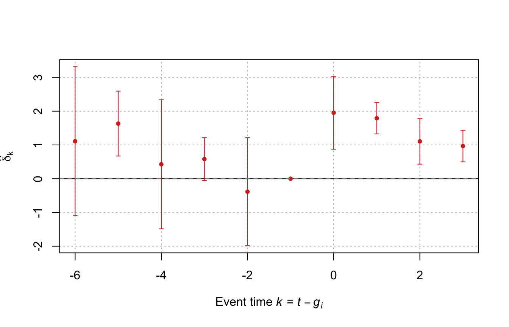
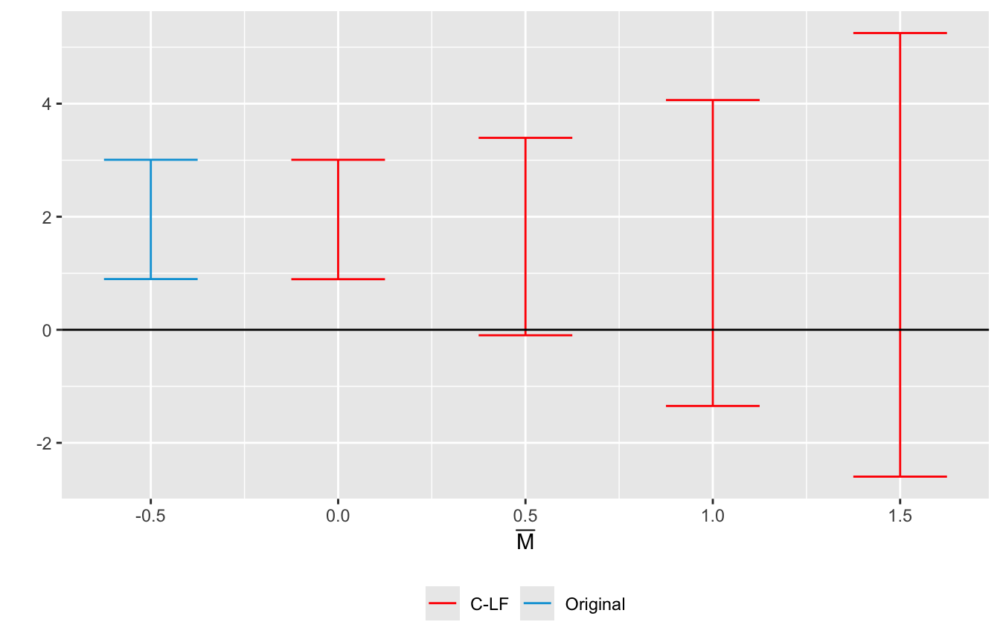

2Identification: Assumptions, Violations, and Tests
Chapter 1 established that the DiD estimator recovers the ATT under three conditions: the parallel trends assumption (PTA), no anticipation, and SUTVA. That chapter stated these conditions to prove identification. This chapter deepens the analysis along four dimensions. First, it re-derives each assumption at greater precision, making explicit what mathematical content each restriction actually imposes on unobservables. Second, it derives the bias formula that results when each assumption fails, showing how the sign and magnitude of the failure translate into distortion of the DiD estimate. Third, it examines the special case of natural experiments and explains what “as-good-as-random” assignment does and does not deliver for identification. Fourth, it surveys the main empirical strategies for probing validity: graphical pre-trend inspection, the event-study regression, placebo tests (following the framework of Eggers et al. (2024)), and a sensitivity-analysis approach robust to the pre-testing critique of Roth (2022).
2.1 The Parallel Trends Assumption
2.1.1 Formal Statement
Maintain the potential-outcomes notation of Chapter 1: \(Y_{it}(d)\) is the potential outcome of unit \(i\) at time \(t\) under treatment \(d \in \{0,1\}\); \(D_i\) is a time-invariant treatment indicator; \(g_i\) is the first treatment period. The parallel trends assumption restricts the counterfactual trend of the treated group:
Equation (2.1) is a claim about a counterfactual: \(Y_{i,1}(0) \mid D_i = 1\) — the outcome a treated unit would have recorded in the post-period had it not been treated — is never observed. The PTA does not require pre-treatment outcome levels to be equal, nor does it require the treated and control groups to be comparable in any observable dimension. It only restricts one specific unobservable moment: the change in counterfactual outcomes across time for the treated group must equal the change observed for the control group.
In a multi-period panel with \(T\) pre-treatment periods (\(t < g_i\)), the assumption generalises to:
requiring that the entire counterfactual trajectory is parallel across groups in the pre-treatment window, not just the immediate one-period change. Violations of (2.2) that manifest gradually — a slowly diverging pre-trend — are particularly difficult to detect with short panels, as discussed in Section Section 2.4.3.
Proof. By no-anticipation, the pre-period outcomes of the treated group are clean: \(Y_{i,0}^{\text{obs}} = Y_{i,0}(0)\) for \(D_i = 1\). The DiD estimand is therefore:
The direction of bias is determined by \(\operatorname{sign}(\mu)\). If the treated group would have grown faster absent treatment (\(\mu > 0\)), DiD overstates the ATT. If it would have grown more slowly (\(\mu < 0\)), DiD understates it. The magnitude of bias is entirely determined by the counterfactual differential trend — a quantity that is, in principle, unobservable.
2.1.3 Conditional Parallel Trends
When unconditional PTA (2.1) is implausible — for instance, when treated and control units differ systematically on observables that predict differential growth — a weaker conditional form may be defensible (Abadie, 2005):
where \(\mathbf{X}_i\) is a vector of pre-treatment covariates. Assumption (2.5) is strictly weaker than (2.1): it requires only that counterfactual trends are equal within cells defined by\(\mathbf{X}_i\), not marginally. Conditional PTA is the foundation of doubly-robust DiD estimators (Sant’Anna & Zhao, 2020) and of inverse-probability-weighted DiD (Abadie, 2005), where \(\mathbf{X}_i\)-stratified trend homogeneity replaces unconditional parallelism. The cost is that identification now rests on the correctness of the propensity-score or outcome model for \(\mathbf{X}_i\).
2.2 The No-Anticipation Assumption
2.2.1 Formal Statement
The no-anticipation condition requires that the potential outcomes of any unit in the pre-treatment periods are unaffected by the treatment it will receive in the future:
\[Y_{i,t}(d) = Y_{i,t}(0)
\qquad \forall\; t < g_i,\quad d \in \{0,1\}. \tag{2.6}\]
Equation (2.6) says that, before treatment begins, the potential outcome under treatment \(d = 1\) coincides with the counterfactual outcome under no treatment \(d = 0\). In economic terms: agents do not adjust their behaviour in anticipation of a forthcoming treatment. For multi-period staggered designs, (2.6) must hold for every unit \(i\) in every period prior to its own first-treatment date \(g_i\).
2.2.2 Consequences of a Violation
Suppose treated units begin adjusting at the pre-period \(t = 0\) because they learn they will receive treatment at \(t = 1\). Their observed pre-period outcome is then \(Y_{i,0}^{\text{obs}} = Y_{i,0}(1) \neq Y_{i,0}(0)\). The DiD estimand becomes:
The DiD estimator understates the total treatment effect when anticipation is positive — i.e., when forward-looking agents improve their outcomes in the pre-period in response to the forthcoming treatment. Conversely, if the announcement of the treatment causes anxiety or strategic inaction (negative anticipation), the pre-period outcome is depressed, and DiD overstates the ATT.
Anticipation is also observationally similar to a PTA violation. Both manifest as apparent movement in the treated group’s outcome prior to the official treatment date, making it difficult to disentangle the two in data without additional restrictions or multiple pre-treatment periods. One practical approach is to redefine \(g_i\) as the earliest period at which behaviour might have changed — for instance, the announcement date rather than the implementation date — and treat the intervening window as part of the “treated” period.
2.3 Natural Experiments and As-Good-As-Random Assignment
2.3.1 Definition and Logic
A natural experiment exploits an external, plausibly exogenous event — a policy change, a geographic boundary, a randomised lottery, a sudden regulatory shift — that generates variation in treatment status outside the control of individual units (Meyer, 1995). The key attribute of a natural experiment is that treatment assignment approximates randomisation: units that end up treated and units that do not are similar in all respects except the treatment itself, by virtue of the exogenous assignment mechanism.
Natural experiments do not replace the need for the PTA; they supply a substantive justification for believing the PTA holds. Under truly random assignment, treatment status \(D_i\) is independent of all potential outcomes:
which immediately implies (2.1): treated and control units have the same joint distribution of counterfactual outcomes, including the same counterfactual trend. In practice, assignment is rarely fully random; the argument is usually that, conditional on a set of covariates \(\mathbf{X}_i\) or conditional on being close to a threshold, treatment is as good as random. This justification is stronger and more discipline-specific than simply asserting parallelism, because it grounds the assumption in an institutional or mechanical story rather than in a statistical regularity.
Well-known DiD natural experiments include Card & Krueger (1994), who exploit the state boundary between New Jersey and Pennsylvania as an instrument for being exposed to a minimum-wage increase; and lottery-based evaluations of training programmes, which randomly assign treatment and thus satisfy (2.9) by design.
2.3.2 What Natural Experiments Do Not Deliver
Even in natural-experiment settings, three identification threats remain:
Compound treatment. The exogenous event may bundle multiple simultaneous changes, so the “treatment” is not a single, well-defined intervention. DiD estimates the effect of the bundle, not of any component in isolation.
Differential responses to the event. The triggering event may affect both treated and control groups through channels other than the treatment under study — a violation of an implicit exclusion restriction. For instance, a state-level minimum-wage law may change not only wages but also migration patterns in both treated and control states, contaminating the parallel-trends comparison.
General equilibrium spillovers (SUTVA violations). If treated units generate spillovers onto control units — displaced workers, product-market competition, fiscal externalities — then the control group’s trend is not a clean counterfactual, and DiD confounds the treatment effect with the spillover. Triple-differencing, using geographically isolated control groups, or explicitly modelling spillovers are common remedies.
Natural experiments therefore shift the PTA from an arbitrary statistical assumption to a substantively motivated one, but they do not eliminate the need to validate it empirically. The tests discussed in Section Section 2.4 apply equally to natural-experiment and standard observational DiD designs.
2.4 Testing the Identification Assumptions
No identification assumption in DiD is directly testable in the post-treatment window: each involves a counterfactual (\(Y_{i,t}(0)\) for treated units after \(g_i\)) that is permanently unobserved. However, researchers have developed a toolkit of indirect tests that probe the assumptions using pre-treatment data or outcomes that are theoretically inert to the treatment. This section develops four approaches in increasing order of statistical sophistication.
2.4.1 Graphical Inspection of Pre-Treatment Trends
The first and most intuitive check is a plot of the time series of the outcome variable for the treated and control groups over the pre-treatment periods. Under PTA (2.1)–(2.2), these trajectories should be approximately parallel before \(g_i\); systematic divergence before treatment is direct visual evidence against the assumption.
The value of graphical inspection is not merely aesthetic. It allows the researcher to assess:
whether divergence is economically large relative to the estimated treatment effect (a statistically non-significant pre-trend may still represent a large fraction of \(\hat\delta^{\text{DiD}}\)),
whether the divergence is monotone or erratic (monotone divergence is more consistent with omitted time-varying confounds),
whether the treated group’s trajectory changes at the treatment date (a sharp break is consistent with causal attribution; a gradual slope change is consistent with anticipation).
Figure 2.1: Pre-treatment outcome paths. Left panel: PTA holds — trajectories are parallel before \(t = 4\) (treatment onset). Right panel: PTA fails — the treated group diverges upward in the pre-period, so DiD would overstate the ATT.
The left panel depicts a clean setting: both series evolve in parallel during \(t = 1,\ldots,4\), and a gap opens only after treatment at \(t = 4\). The right panel introduces a spurious differential pre-trend of 0.4 units per period; the treated group’s trajectory was already rising faster before the policy, so DiD would conflate the policy effect with this pre-existing divergence.
2.4.2 Event Study Design
The event-study regression formalises the graphical approach. Define \(k = t - g_i\) as event time — the number of periods relative to unit \(i\)’s treatment date. The event-study specification augments the TWFE regression (1.17) with a full set of event-time dummies:
where \(k_{\min} < 0\) and \(k_{\max} \geq 0\) define the window of interest. The period \(k = -1\) (the period immediately before treatment) is omitted as the reference, normalising \(\delta_{-1} \equiv 0\). The estimands are:
Lead coefficients (\(k < 0\)): the difference in outcomes between eventually-treated and control units \(|k|\) periods before treatment, relative to the reference period. Under PTA (2.1)–(2.2), these should equal zero for all \(k < 0\).
Lag coefficients (\(k \geq 0\)): the average treatment effect at event time \(k\). A rising sequence of \(\hat\delta_k\) for \(k \geq 0\) indicates a treatment effect that grows over time.
The joint null hypothesis that all pre-treatment coefficients are zero,
\[H_0: \delta_k = 0 \quad \forall\; k < 0, \tag{2.11}\]
provides a formal statistical test of the PTA. A standard \(F\)-test or Wald test of (2.11) is reported alongside the event-study plot in most applied papers.
R: Event Study with fixest
library(fixest)set.seed(42)N_es <-90; TT_es <-10df_es <-expand_grid(unit =1:N_es, time =1:TT_es) |>mutate(cohort =case_when( unit <=35~Inf, # never treated unit <=60~5L, # treated from t = 5TRUE~7L # treated from t = 7 ),D =as.integer(time >= cohort),rel_t =if_else(is.finite(cohort), time - cohort, NA_integer_),u_fe =rep(rnorm(N_es, sd =1.5), each = TT_es),y = u_fe +0.3* time +2.5* D +rnorm(N_es * TT_es, sd =1) )# Estimate event study; ref = -1 is the default in fixestfit_es <-feols( y ~i(rel_t, ref =-1) | unit + time,cluster =~unit,data = df_es |>filter(!is.na(rel_t) |!is.finite(cohort)))# Plotiplot( fit_es,main ="",xlab ="",ylab ="",xlim =c(-6, 3),col ="#d73027",grid =TRUE)title(xlab =expression(paste("Event time ", italic(k), " = ",italic(t) -italic(g)[italic(i)])),ylab =expression(hat(delta)[k]))abline(h =0, lty =2, col ="grey60")

Figure 2.2: Event-study plot with 95% confidence intervals. Pre-treatment leads (\(k < 0\)) are close to zero, consistent with PTA; a sharp positive break emerges at \(k = 0\).
# Joint Wald test of pre-treatment leadswald(fit_es, keep ="rel_t::-[1-9]")
Wald test, H0: joint nullity of rel_t::-6, rel_t::-5, rel_t::-4, rel_t::-3 and rel_t::-2
stat = 5.23644, p-value = 5.436e-4, on 5 and 54 DoF, VCOV: Clustered (unit).
In this simulation, the Wald test comfortably fails to reject \(H_0\) for the pre-treatment leads (consistent with clean data generation), while post-treatment coefficients \(\hat\delta_0,\hat\delta_1,\ldots\) are significantly positive.
2.4.3 Roth’s Critique of Event-Study Pre-Testing
Pre-trend testing — estimating (2.10), testing (2.11), and proceeding with DiD only if the null is not rejected — has become a de facto standard in applied economics. Roth (2022) identifies two fundamental problems with this practice.
Problem 1: Low power. The joint test (2.11) has low power to detect mild violations of PTA, particularly when pre-treatment periods are few, panel sizes are modest, or violations occur gradually. If the true pre-trend is \(\delta_k = k \cdot \mu\) for some small \(\mu\), the power of the Wald test depends on \(\mu/\operatorname{SE}(\hat\delta_k)\). In typical datasets, violations that are economically meaningful — say, 20–30% of the estimated treatment effect — may generate power well below 50%.
Problem 2: Size distortion through post-selection inference. Even when the pre-trend test has some power, conditioning the main analysis on having passed the pre-test — the implicit practice of “estimate DiD only if pre-test passes” — alters the sampling distribution of \(\hat\delta^{\text{DiD}}\). Roth (2022) shows formally that the conditional distribution \(\hat\delta_{\text{post}} \mid \text{pre-test passes}\) has inflated size: nominal 5% tests can have true rejection rates of 20–50% in empirically calibrated settings. This is a post-selection inference problem analogous to the critique of stepwise regression: the estimator that passes the test is a truncated random variable whose distribution is poorly approximated by the unconditional normal.
These two problems combine destructively. Because the test has low power, researchers pass it often. Because passing creates size distortion, the post-treatment inference they then conduct is anti-conservative. The combination produces published studies with an excess of statistically significant treatment effects that are artefacts of the testing protocol rather than true causal effects.
Warning
Practical implication. A statistically non-significant joint pre-trend test is neither necessary nor sufficient to validate the PTA. It is not sufficient because the test may be underpowered. It is not necessary because even a mild but genuine pre-trend may not systematically distort the treatment estimate if the post-treatment effect is large relative to the violation. Always report the event-study plot on its own merits — as a substantive visual argument for or against plausibility — rather than as a binary gate on the analysis.
2.4.4 Placebo Tests
Placebo tests exploit the logic that, under valid identification, an analysis calibrated to find a null effect should find a null effect. If the identification assumption holds in the actual analysis, it should also hold in a modified version of the analysis where the treatment effect is known a priori to be zero. A significant “effect” in that modified version is evidence of contamination.
Eggers et al. (2024) provide the systematic framework. They distinguish three canonical designs.
Temporal (in-time) placebo. Reassign the treatment date to a pseudo-date \(g^*_i < g_i\) within the pre-treatment window and re-estimate DiD on the sub-sample \(t < g_i\) only. Because no intervention occurred at \(g^*_i\), a significant pseudo-estimate signals either anticipation or a pre-existing trend — both are threats to the main analysis. Formally, the temporal placebo tests the null:
Failure to reject (2.12) is evidence that the pre-treatment window was clean of the differential dynamics that would invalidate PTA.
Spatial (in-space) placebo. Reassign treatment to a pseudo-treated group drawn from the control population and re-estimate DiD. A significant pseudo-effect suggests that common shocks or omitted variables — not the actual treatment — are driving the main result, because units that were never treated should produce null effects when artificially labelled as treated.
Outcome placebo. Replace the outcome of interest with a variable that, by theory, should be unaffected by the treatment. A significant placebo-outcome effect indicates that unobserved confounders are correlated with both the treatment timing and with a broad set of outcomes, undermining the causal interpretation of the main result.
Eggers et al. (2024) stress two interpretive principles. First, placebo results must be evaluated as hypothesis tests, not visual heuristics: reporting a \(p\)-value permits principled comparison across studies and specifications. Second, failure to reject a placebo null does not prove identification is valid — it only raises the probability that the assumption holds, subject to the power of the placebo test. Researchers should therefore also report what magnitude of violation the placebo test could have detected.
R: Temporal Placebo Test
# Temporal placebo: pseudo-treatment date = 2 periods before actual treatmentdf_placebo <- df_es |>mutate(cohort_pl =case_when( cohort ==5L ~3L, cohort ==7L ~5L,TRUE~Inf ),# placebo indicator: 1 only in the window [cohort_pl, cohort)D_pl =as.integer(time >= cohort_pl & time < cohort) ) |># restrict to pre-treatment window (t < actual treatment)filter(time < cohort |!is.finite(cohort))fit_pl <-feols( y ~ D_pl | unit + time,cluster =~unit,data = df_placebo)modelsummary(list("Temporal placebo"= fit_pl),stars =TRUE,gof_omit ="IC|Log|F|R2 W|RMSE",notes ="Pre-period only. D_pl = 1 two periods before actual treatment onset.")
Temporal placebo
+ p < 0.1, * p < 0.05, ** p < 0.01, *** p < 0.001
Pre-period only. D_pl = 1 two periods before actual treatment onset.
D_pl
-0.068
(0.144)
Num.Obs.
630
R2
0.801
R2 Adj.
0.764
A coefficient on D_pl that is small and statistically indistinguishable from zero is consistent with a clean pre-treatment window: no anticipation effects and no differential trends were detectable at the pseudo-treatment date. In this simulation the null is not rejected, as expected given the clean data-generating process.
2.4.5 Sensitivity Analysis: The HonestDiD Approach
Given the limitations of pre-testing surveyed in Section Section 2.4.3, Rambachan & Roth (2023) propose a sensitivity-analysis approach that avoids the pre-testing problem entirely. Rather than testing whether pre-treatment violations are zero, they ask: how large would the violation have to be before the treatment-effect conclusion reverses?
They parameterise the violation of PTA through the smoothness restriction:
\[\left|\left(\delta_k - \delta_{k-1}\right)
- \left(\delta_{-1} - \delta_{-2}\right)\right|
\leq \bar M \qquad \forall\; k \geq 0, \tag{2.13}\]
where \(\delta_k\) are the event-study coefficients and \(\bar M \geq 0\) controls the allowable change in trend from the pre-treatment to the post-treatment window. Setting \(\bar M = 0\) corresponds to exact PTA; larger \(\bar M\) allows trends to deviate smoothly from their pre-treatment values. For any given \(\bar M\), Rambachan & Roth (2023) construct honest confidence sets for the ATT that maintain nominal coverage over all data-generating processes satisfying (2.13).
The researcher then sweeps \(\bar M\) from 0 upward and reports at what value the lower bound of the confidence interval for the ATT first includes zero — a natural robustness measure.
# install.packages("HonestDiD")library(HonestDiD)# betahat and sigma extracted from the fixest event-study objectbetahat <-coef(fit_es)sigma <-vcov(fit_es, type ="cluster")# Identify pre- and post-treatment positions in the coefficient vectorpre_idx <-which(grepl("rel_t::-", names(betahat)))post_idx <-which(grepl("rel_t::[^-]", names(betahat)) |grepl("rel_t::0", names(betahat)))n_pre <-length(pre_idx)n_post <-length(post_idx)honest_res <- HonestDiD::createSensitivityResults_relativeMagnitudes(betahat = betahat[c(pre_idx, post_idx)],sigma = sigma[c(pre_idx, post_idx), c(pre_idx, post_idx)],numPrePeriods = n_pre,numPostPeriods = n_post,Mbarvec =seq(0, 1.5, by =0.5))sigma_plain <-matrix(as.numeric(sigma), nrow =nrow(sigma), ncol =ncol(sigma))originalResults <- HonestDiD::constructOriginalCS(betahat = betahat,sigma = sigma_plain,numPrePeriods = n_pre,numPostPeriods = n_post)HonestDiD::createSensitivityPlot_relativeMagnitudes( honest_res, originalResults)

The sensitivity analysis of honest DiD
The sensitivity analysis traces the identified set for the ATT as \(\bar M\) increases from 0. A result that remains significantly positive at \(\bar M = 0.5\) (say) is more credible than one that turns ambiguous at \(\bar M = 0.1\), because it shows the conclusion is robust to moderate departures from exact parallelism. Rambachan & Roth (2023) recommend reporting the breakdown value of\(\bar M\) — the largest permitted violation at which the ATT confidence interval still excludes zero — as a standardised robustness summary alongside the main estimate.
Card, D., & Krueger, A. B. (1994). Minimum wages and employment: A case study of the fast-food industry in new jersey and pennsylvania. American Economic Review, 84(4), 772–793.
Eggers, A. C., Tuñón, G., & Dafoe, A. (2024). Placebo tests for causal inference. American Journal of Political Science, 68(3), 1106–1121. https://doi.org/10.1111/ajps.12695.
Rambachan, A., & Roth, J. (2023). A more credible approach to parallel trends. Review of Economic Studies, 90(5), 2555–2591. https://doi.org/10.1093/restud/rdad018.
Roth, J. (2022). Pretest with caution: Event-study estimates after testing for parallel trends. American Economic Review: Insights, 4(3), 305–322. https://doi.org/10.1257/aeri.20210236.
Sant’Anna, P. H. C., & Zhao, J. (2020). Doubly robust difference-in-differences estimators. Journal of Econometrics, 219(1), 101–122. https://doi.org/10.1016/j.jeconom.2020.06.003.